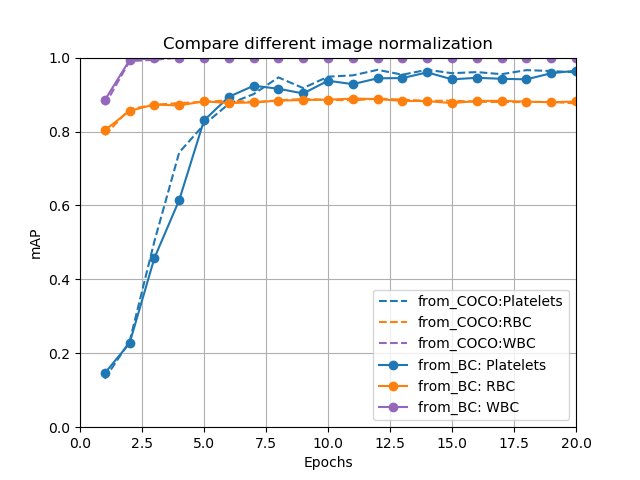

未完
個人練習，以RetinaNet數血液細胞的個數。
主題：
計算一張血塗片影像中出現的血小板(Platelet)、紅血球(RBC)和白血球(WBC)的個數。
並運用一些訓練技巧:
- 資料增量： GridMask, Mosaic
- 正規化：DropBlock
資料集：
與 baseline (HOG+SVM) link 相同
方法：
- backbone選用ResNet-18，確認其物件偵測表現遜於backbone為ResNet-50，然後測試一些訓練技巧，能否提昇backbone為ResNet-18的表現。
- 每個方法重複實驗3次，數據取平均。
結果:
使用 VOC-style Average Precision算法[6]。
| Average Precision (IoU threshold) | |||
| Method | Platelet | RBC | WBC |
| HOG+SVM | 34.32% (0.1) | 58.64% (0.1) | 91.43% (0.5) |
| RetinaNet(ResNet-50) | 85.76% (0.5) | 88.16% (0.5) | 100% (0.5) |
| RetinaNet(ResNet-18) | % (0.5) | % (0.5) | % (0.5) |
溫故知新
image normalozation的mean和std設定值是否很重要？
需要做image normalozation的原因跟做batch normalization的原因相似，batch normalization：將輸入資料調整為高斯分佈、降低Internal Covariate Shift問題，增進模型的學習效率。image normalozation的常見算法是對training dataset的每個channel獨立計算mean和variance，用BN取代image normalozation不是個有效率的作法，因為BN的mean和variance是模型逐次學習出來的。
我使用的RetinaNet其image normalozation的mean和std設定值是由COCO資料集算出來的，比較用Blood Cells資料集算出來的mean和std，雖然肉眼看到的色調明暗差異大，但兩者模型準確度是差異不大。
為何凍結BN層參數？
作者說雖然因為pretrained資料集是Imagenet，與我們的dataset統計分佈有差異，可是訓練物件偵測模型的batch size很小(例如8)，又，有人實驗過，若藉由finetuning來學習新的BN，模型表現反而會像從頭訓練那般，難怪作者會選擇凍結Resnet的BN層參數。
使用Focal loss時，model新增的層的初始值要選用zero-weight、constant-bias。
參考資料：
[] RetinaNet source project [link]
[] Internal Covariate Shift link
[] NVidia的影像正規化介紹 link
[] 凍結BN層參數 link